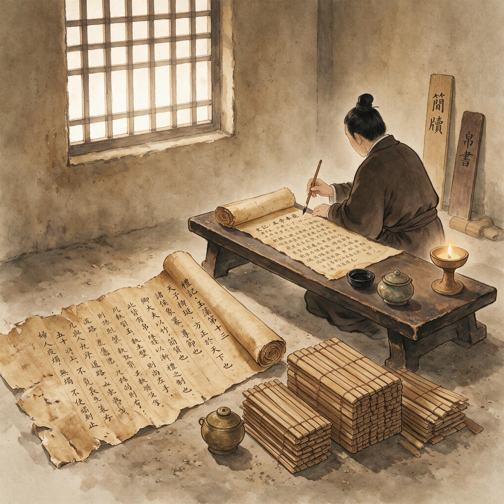

第 5 章
简与帛的困局
尚方令的考工簿摊在案上。竹简编连的簿册，每一片都磨得光滑，细牛皮绳从孔眼里勒过去，在封皮上结成十字。蔡伦已经看了一个时辰，目光停在各署领用简帛的记录上。
那些数字很小，是各署令史自己报上来的，再由尚方属吏誊抄成册。数字后面没有备注，没有说明，只有一行一行的事实，像竹简本身的重量一样沉默。
他翻到最新一页。尚书台本月领竹简六十捆，笔三十支，墨八锭，缣帛未领。兰台领竹简三十五捆，缣帛三匹，墨十二锭，笔十支。东观领竹简二十五捆，缣帛二匹，笔二十支。太常领竹简四十捆，墨六锭。少府诸曹领竹简十五捆，笔八支。
每一行都是一道压力，从不同的方向压过来，最后汇在尚方令的案前。竹简领得越多，库房的存料越薄；缣帛领得越少，各署的不满就越深。
他不能责怪任何一个署。尚书台有尚书台的难处，兰台有兰台的难处，东观有东观的难处。他们都在同一个泥潭里挣扎，只是挣扎的姿势不同。蔡伦合上考工簿，手指压在封皮上，感觉到竹片之间细微的参差。
这本簿子从永元九年他接任尚方令起，一年一卷，现在已经积了四卷。四卷簿册，记录着尚方工坊全部造作进出，也记录着整个宫廷文书系统的物资流转。
兵器、礼器、乘舆、案头器用之外，笔、墨、简、帛四样，是尚方令职责里最不显眼的部分，却牵动着朝廷的每一道诏令、每一份奏章、每一次经传校勘。他曾经以为，尚方令的要务是那些看得见的重器。剑要锋利，鼎要合度，车舆要稳当，屏风要华美。这些东西摆在朝堂之上，人人都能看见，人人都能品评。
但真正支撑朝廷日常运转的，不是那些礼器重器，而是最不起眼的竹片、丝帛、松烟和兽毫。没有竹简，诏令无法草拟；没有缣帛，正本无以呈御；没有笔墨，一切文字都无处着落。
他站起身，把考工簿放回架上。窗外天已经黑透，洛阳的冬日夜幕垂下来，把尚方工坊的院子罩在一片深紫色里。远处有更鼓声传来，闷而缓，从宫墙方向荡开。他披了件外袍，推门出去。廊道里很静。各作房的炉火已经封了，只有铁作房的烟囱还冒着极细的一缕青烟，在夜气里散得很快。
他经过织作房的时候，闻到了麻线和丝线混在一起的气味，那气味让他想起耒阳。铁官作坊里没有这种味道，但铁官作坊外的市集上有。那些从湘水边挑着麻布来卖的妇人，身上就有这样的气味，混着水汽和草灰。他在院里站了片刻，没有继续走。夜风从北墙外翻进来，吹得廊柱上的风灯轻轻摇晃。灯光在青石板上画出一个晃动的圈，圈里的石纹时隐时现。他盯着那个圈，想起考工簿上的数字，想起各署来领简帛时说的那些话。尚书台的令史来过，说：“再按这个量配下去，书佐们的手腕就全废了。令君，您能不能跟少府说说，多拨些帛给我们？正本总不能都写在刮过的旧简上。”
兰台的令史来过，说：“新简的质量越来越差。这批送来的，竹青薄，火候也不匀，写上去墨晕得厉害。兰台要校经，简不好，校出来的定本谁敢信？”

汉代帛书实物
AI 生成插图，非史实影像。
东观的令史来过，说：“竹简的库房已经满了。新抄的注疏没地方放，只能堆在廊下。冬天雨水多，再堆下去要烂。”
他们说的都是同一件事：书写材料不够用，不好用，不顶用。但他们不知道，他们各自的抱怨分开听是抱怨，合在一起听，就是一道裂痕。这道裂痕不在某个署，不在某个库房，而在这套文书系统的根底上。蔡伦转身往回走。回到值夜的房间，他重新翻开考工簿，翻到最后一页。页边的空白处，他写下的那两个字还在——“试纸”。墨已经渗进竹子的纹理里，笔画很稳，像刻上去的。他提笔，在“试纸”下面又添了一行：“简重帛贵，非一日之困，亦非一署之难。”
写完，他把笔搁下，看着那行字慢慢干透。纸，这个字从他笔下出来的时候，他还不确定自己会造出什么东西。他只是知道，那个东西必须比竹简轻，必须比缣帛便宜，必须能承受墨汁的浸润，必须让尚书台的书佐不再用刮过的旧简，让兰台的令史不再为编绳断裂发愁，让东观的库房不再被竹简压得喘不过气。他必须解决这个问题。不是因为他想，是因为他的位置要求他解决。
第二天一早，蔡伦去了简牍作房。尚方的简牍作房和民间作坊不同。民间的竹简大多就近取材，砍了竹子削平就写，火候、厚薄都不讲究。尚方供御用的竹简，有严格的规格。竹要选三年以上的老竹，竹青要光滑无斑，竹节要平整，宽度不过一寸，长度分作数等。工匠先把竹子破成长条，削去竹黄，放在火上烤出汗青，再用石头打磨，最后穿孔编绳。一道一道工序下来，一片合格的竹简，工钱比得上一斤粗粮。
蔡伦站在作房中间，看工匠们削竹。那批新到的竹材来自南阳，色青皮厚，品相不错。
一个老工匠手持刮刀，顺着竹片的纹理往下削，刀片过处，竹黄卷起来，像刨花一样落在地上。他的动作很稳，每一刀的力度都相同，削出来的竹青面光滑得发亮。“这批简能出多少？”蔡伦问。作房的令史抱着一捆成品过来，放在地上让蔡伦验看。“回令君，这批竹材比上个月的好。估摸着十捆里能出七捆上等，两捆中等，废率不超过一成。”
“上等的送到哪些署？”
“先送尚书台。尚书台催得紧，说正本要用上等简，不能再拿中等的凑合了。”令史顿了顿，压低声音，“令君，有句话我不该说，但尚书台的人实在难伺候。上月送去的那批，他们说竹青不够滑，写起来涩笔。可那批已经是全月最好的一批了，再好的，整个尚方也拿不出来。”
蔡伦拿起一片简，在光下看。竹青那一面很光滑，手指摸上去有凉意，几乎感觉不到纹理。这样的竹简写起字来应该很顺滑，但尚书台还不满意。不是尚书台挑剔，是尚书台的标准不同。他们的书佐每天要写几千字，笔尖在竹面上反复摩擦，稍有涩感就会拖慢速度。速度一慢，活就干不完。活干不完，尚书令就要怪罪。“他们说得有道理。”蔡伦把竹简放回捆里，“但全上等的简，我们确实供不上。你照旧配发，把上等简优先给尚书台，兰台和东观次之。太常的律令抄本可以缓一缓。”
令史应了声是，又去催促工匠。蔡伦在作房里转了一圈，看工匠们破竹、削青、烤简、磨面。每一道工序都熟练，每一道工序都没有多余的步骤。他们做竹简做了十几年，甚至更久。把一根竹子变成一片可以写字的简，就是他们全部的手艺。
但这门手艺有尽头。竹简做得再好，也还是竹简。它还是重，还是硬，还是容易受潮发霉，还是需要编绳，还是会在架子上越堆越高。工匠们可以改进竹简的品相，却改变不了竹简的本质。就像铁官作坊的工匠可以把铁打得更纯，却不能让铁变成铜，更不能让铁变成别的东西。
蔡伦从简牍作房出来，穿过院子，进了库房。库丞正在点数新到的缣帛，一共十二匹，统统来自齐郡。其中素帛十匹，练帛两匹。素帛颜色温润，未经漂练，适合日常文书。练帛洁白挺括，经过反复漂洗，厚实耐藏，专用来抄写祭祀用的祝文和重要诏令。
“这批帛料，少府已经全部划给尚书台了。”库丞把帛一匹一匹放到架上，动作很轻，像对待易碎的瓷器，“东观的人上午来了，想要两匹练帛抄经。我让他们去找少府批，他们不肯走，在库房外站了半天。我没法子，说你们找尚方令去，我才放了两匹素帛给他们先顶着。”
蔡伦看了看架上的缣帛。每一匹都裹着细麻布，系着标签，写明年份、产地、种类。缣帛的库存一直不多，少府的调拨严格，各署都盯着。每年从各郡国征调上来的帛料，除去祭祀和礼仪用途，留给文书的并不多。而文书中真正能用上帛的，只有那些必须长期保存或呈御览的正本。其余的一切文字，都要回到竹简上去。库丞叹了口气：“令君，缣帛这东西，来得慢，去得快。各署都想要，给谁都不够。我要是有三头六臂，也分不匀。”
蔡伦没有接话。他站在架子前，看着那十几匹帛，忽然想起章帝年间兰台用帛抄的那批经书。那些帛书在兰台库里放了几十年，到现在完好如初，字迹清楚，绢面柔韧。而同时期的竹简，编绳早已断了，简片散落失序。
帛的寿命远远超过竹简，但帛的产量永远跟不上竹简。朝廷的书写需求是一个无底洞，用帛去填，再多的帛也不够。
他从库房出来，没回值夜的房间，而是径直出了尚方工坊的侧门，沿着宫道往尚书台走。宫道两旁是高高的墙，墙上的瓦当积着薄雪，在冬日的阳光下泛着湿亮。宫道上没什么人，只有几个小黄门缩着脖子匆匆来去，脚步轻而快。蔡伦认得其中一个，是当年和他一起在宫墙内当差的，现在在少府某曹做杂役。那人远远看见他，停了一下，似乎想打招呼，但终是低下了头，快步过去了。蔡伦没有在意。
他继续走，脑子里转着尚书台令史说的那些话。尚书台在宫中的位置，他自己并不陌生。早年当小黄门时，他常从尚书台外的廊下经过，看那些书佐伏在案上抄写。
当时他还不知道那些竹简上写的什么，只觉着那沙沙的声音像夏天的虫鸣。
后来他进了少府，才知道尚书台是整个朝廷信息流转的中枢。皇帝的话在这里变成文字，文字变成诏令，诏令变成竹简，竹简变成车马，车马把诏令送往四面八方。而四面八方送来的奏章，也沿着同一条路回来，最终堆在尚书台的案头。
如此庞大而频繁的文书往来，靠的全是竹简和笔。墨迹落在竹片上，干透了，再卷起来，捆好，编绳一系，就是一份文件。竹简与缣帛，就是这个帝国的纤维与神经。
走到尚书台门外时，蔡伦停住了脚。门是半掩着的，里面传来咳嗽声和磨墨声。他推门进去，一股浓重的墨气扑面而来。十几张长案在大屋里排成两列，书佐们伏在案上，每个人手边都堆着高高的竹简，有的已经写完，有的还空着。屋角的炭盆烧得不旺，散着若有若无的热气。有个书佐抬头看了蔡伦一眼，又低下头继续写，手里的笔在竹简上飞快地划动。尚书台的令史从里间出来，见到蔡伦，先是一愣，随即拱了拱手：“令君怎么亲自来了？简和墨的事，叫底下人跑一趟就行。”
蔡伦说：“我来看看你们用了多少，还差多少。”
令史苦着脸，把一份抄好的诏令底稿递给蔡伦。那底稿写在三片竹简上，字迹工整，但竹简的背面隐隐透出旧墨的痕迹。蔡伦把竹简翻过来，背面果然有刮过的旧字，虽已刮去大半，仍有笔画如鬼影般浮在竹黄上。“这是第几遍用了？”蔡伦问。令史看了看：“两遍了。正面写过一回，反面写过一回，刮了又写，这是第二遍。”
“还能刮吗？”
“再刮就要穿了。竹片已经薄得透亮，刀一上去就得裂。”令史顿了顿，声音低下去，“可不用这样的简，又能怎么办？新简有限，正本都抢不过来。底稿么，能写就行，反正是自己看的。尚书令也知道这事，只是不说破。说破了，大家都不好看。”
蔡伦把竹简还给他。他以前只知道竹简重，竹简笨，竹简多。但现在他知道了另一件事：竹简不仅重，不仅笨，不仅多，它还不够用。它逼得人们把旧字刮掉，逼得人们在模糊的旧痕上重新书写，逼得书佐们的眼睛和手腕一日坏过一日。这不是哪个人无用，是竹简的承载能力已经跟不上文书的速度。
从尚书台出来，蔡伦去了兰台。兰台在宫城偏北，与东观相邻，院落冷清。冬天的柏树不落叶，枝叶浓密地压下来，把天光遮去大半。蔡伦走进院子时，正看见几个书佐在廊下翻晒简册。那些旧简大多散了编绳，一片一片摊在草席上，等着重新排序。风吹过时，草席上的简片发出细碎的碰撞声，像骨牌轻响。书佐们跪在地上，一片一片地拿起来看，再看草席上的号码，动作迟缓。
兰台令史带着蔡伦进了库房。库房里光线昏暗，木架高耸，一卷卷竹简堆得密密匝匝。令史指着最里面几排架子说：“令君，您自己看吧。新收上来的简册已经没地方放了。那几排架子是明帝年间做的，木料朽得厉害，但少府没拨过修架子的钱。
我们拿旧木东支西撑，凑合一季是一季。如今架子上压架子，有些简册干脆堆在地上，下面垫着木板防潮。要再这么收下去，只能是简压着简，字压着字，谁也找不着。”
蔡伦走到最里面，矮下身去看。靠墙的地上堆着一摞一摞的竹简，用旧麻布裹着，标签有些已经脱落，有些还挂在绳上，字迹模糊。墙壁上渗着潮气，摸上去又冷又湿。
他站起来，在幽暗中抬头看那些架子。架子一共七层，木头陈旧，透着黑褐色。每一层都塞满了竹简，从地上顶到天花，像一堵用竹片砌成的墙。那些竹简分属不同的年代，有些还是明帝、章帝时留下的，历经三朝，从未被打开过。它们就在这里，静静躺着，被遗忘，被尘封。
“你们想找一卷旧简，需要多长时间？”蔡伦问。令史想了想：“得看是什么简。如果是常用的律令，有索引，半天能找到。如果是旧年的奏章抄本，没有索引，只能按年份逐架翻，运气好，三五天。运气不好，找上一个月也是常事。”
“所有简册都编了目吗？”
“旧简有目，但不全。明帝年间整理过一次，后来几十年没有补过。中后期的简册，有些连标签都掉了，根本不知道是什么。”令史摇摇头，“令君，我说句不好听的。这些东西存在这儿，跟不存在差不多。我们能看管的，只是不让它们烂掉。但真要用人去查，人力哪里够？光是把断绳的旧简重新编起来，就已经占去大半个人工了。”
蔡伦点了点头。兰台是朝廷的藏书之地，藏的不只是儒家经传，还有律令、地志、旧档、计簿。纸张出现之前的东汉，知识就储存在这些竹片上。但竹片的物理属性——沉重、占空间、易散落——已经反过来限制了知识本身。藏得越多，越难使用；藏得越久，越难整理。兰台积累的简册越多，兰台的困局就越深。他转身出了库房。院里的柏树香很淡，混着竹简的酸味。令史送他到门口，压低声音说了一句话：“令君，前日东观的张令史来借简，说洛阳宅儿注疏要用。我查了半日，有一卷可能可用，但拿下来一看，编绳早断了，简片乱了。张令史等不及，走了。临走丢下一句：兰台的书，看得了，用不了。我听了心里很不舒服，可也无话可回。”
蔡伦没说什么。他往东走了几十步，又停住，回头看了一眼兰台的院子。那些书佐还在廊下翻晒旧简，蹲的蹲，跪的跪，像地里拾穗的农人。他们手里拿着的，就是这个朝廷全部的记忆。那些记忆要是散了呢？要是发霉了呢？要是被虫蛀了呢？那失掉的不止是一部书，而是所有人无法再找回的过去。他回到尚方工坊时，天色已近昏黄。各作房都开始收工，工匠们在水井边打水洗手。蔡伦从他们身边走过去，进了自己的值夜房，摘下外袍挂在墙上。他坐下来，翻出那本考工簿，在页边的空白处又添了几行：
“尚书台，简再刮而字不清。兰台，简多而不能用。东观，库满而不能收。”
写完后，他坐在那里，手指按在竹简上，感到一阵从未有过的疲倦。这种疲倦不是来自身体，不是来自工坊里的走动，而是来自看见。看见尚书台书佐手腕上的旧伤，看见兰台库房里朽木支撑的简架，看见东观廊下无处安放的注疏。这些东西他以前也见过，但那时他只是经过，没有停下来。现在他停下来了，认真看了看，才知道那个“简重帛贵”的困局有多深。
可是，他还没有想到办法。他只知道，这件事不能只靠“将就”。将就下去，竹简还会更薄，薄到再也搁不住墨；缣帛还会更少，少到连正本都不得不改用竹简。而朝廷的文书只会越来越多，行政的压力只会越来越重。没有人能把一份奏章缩减成一句口信，也没有人能把一部经传的校勘缩减成十片竹简。制度的运转，就是靠这些文字堆出来的。
文字越多，材料越紧；材料越紧，行政越慢；行政越慢，朝廷的反应就越迟。这个链条，从头到尾，死死咬在一起。他忽然觉得，自己站在这个链条的中间，是最应该伸手去拆开它的人。但他手里没有现成的工具，也没有成型的法子。
他去了东观。
东观的院落比兰台大些，但格局更散。几排房子依地势错落，中间夹着窄窄的甬道，甬道两侧堆着陶瓮和旧木箱，有些箱盖半开，露出里面成卷的竹简。东观令史张衡不在，去了太常寺查阅律令旧档。接待蔡伦的是一个年轻书佐，二十出头，眼窝深陷，手指关节粗大——那是常年握笔抄书留下的痕迹。
书佐领着蔡伦穿过甬道，在一间偏房前停下。房门半开，里面没有点灯，借着门口的天光能看见地上码着十几摞竹简，摞与摞之间只留出一脚宽的空隙。竹简外面裹着旧麻布，有些麻布已经发黑，边缘被老鼠啃过，露出里面泛黄的简片。
“这些是今年春天抄完的《汉书》注疏，一共六十卷。”书佐指着那些竹简说，“本来说要送兰台入库，兰台说没地方，让我们先自己存着。存到现在，夏天潮气上来，底下几卷的编绳已经松了。我们想翻晒，但院子里晒不下，只能分批来。上一批还没晒完，下一批又潮了。”
蔡伦蹲下去，掀开一角麻布。竹简的编绳果然松了，几片简从绳孔里滑出来，斜斜地搭在旁边的简卷上。他拿起一片，竹青那一面密密麻麻写满了字，字迹很小，笔画细而匀，看得出抄写的人用了极大的耐心。但竹片的边缘已经起了霉斑，灰绿色的霉丝沿着竹纹蔓延，有几处已经盖住了字迹。
“抄这一卷用了多长时间？”蔡伦问。
“两个人，抄了四十天。”书佐说，“从明帝的本纪抄起，一个字一个字地校。每抄完一卷，要请博士官校读一遍，错了的刮掉重写。一卷注疏，少则七八百片简，多则一千二三百片。编起来之后，一卷重七八斤。六十卷就是四百多斤。令君，您想想，四百多斤的竹简，就堆在这间偏房里，连个架子都没有。”
蔡伦把竹片放回去，站起来。他的目光扫过那些竹简，扫过墙角发潮的墙皮，扫过书佐粗大的指关节。这个年轻人抄了四十天的书，抄出来的东西就堆在地上发霉。不是没人管，是管不过来。东观的库房早就满了，兰台的库房也满了，整个宫廷的藏书之所都在超载运转。而各郡国还在源源不断地往上送——新的律令要抄，新的注疏要校，新的计簿要存。竹简像潮水一样涌进来，退不出去，越积越高。
“张令史上次去兰台借简，回来怎么说的？”蔡伦问。
书佐犹豫了一下，低声说：“张令史说，兰台的书看得了，用不了。他说这话的时候很生气，但生完气又叹气，说怪不得兰台，是竹简这东西本身就不对。一部书几十卷，每卷七八斤，查一条注疏要把几十卷全搬下来，翻完了再搬回去。一个人搬不动，得两个人抬。查一条注疏，抬一次简，再查一条，再抬一次。一天下来，书没查几条，力气全花在搬竹简上了。”
蔡伦听着，没有打断。书佐的话里有一种疲倦，不是对工作的疲倦，是对竹简本身的疲倦。这种疲倦他在尚书台见过，在兰台见过，现在在东观又见到了。它不是某一个人的情绪，而是所有与竹简打交道的人共有的处境。竹简的重量，竹简的体积，竹简的易损，竹简的不可压缩——这些物理属性像一道道栅栏，把文书系统圈在一个越来越窄的空间里。
他走出偏房，站在甬道中间。甬道很窄，两侧堆着杂物，头顶是挑出的屋檐，把天光切成细细的一条。他忽然想起自己在耒阳铁官作坊时见过的冶铁炉。炉膛里的铁水沸腾着，铁工们用长柄勺舀出铁水，倒进模子里。铁水在模子里冷却，变成铁锭，铁锭再送到锻炉上捶打，打成刀、打成犁、打成钉。每一道工序都有明确的目的，每一块铁都有确定的去处。但竹简不是这样。竹简从工匠手里出来，经过书佐的笔，变成文书，变成典籍，然后堆在库房里，变成越来越沉重的负担。它的终点不是使用，而是堆积。
这个念头像一根刺，扎进他的意识里。他没有立刻去拔它，而是让它留在那里，带着一种隐隐的痛感。他向东观的年轻书佐告辞，沿着甬道往外走。走到门口时，他回头看了一眼那间偏房。房门已经关上了，书佐的背影消失在门后。那十几摞竹简还在里面，裹着发黑的麻布，等着下一次翻晒，或者下一次发霉。
回到尚方工坊后，蔡伦没有立刻进屋。他在院子里站了一会儿，看工匠们收拾工具。木作房的工匠在打磨一根车轴，砂石摩擦木头的声音沙沙的，细而均匀。漆作房的工匠在调漆，生漆的气味从窗口飘出来，辛辣中带着一丝甜。织作房的织机已经停了，几个女工坐在门槛上搓麻线，手指飞快地捻动，麻线在她们膝头越绕越大。这些人都不知道尚书台的书佐在刮旧简，不知道兰台的令史在朽木架子上找书，不知道东观的注疏在偏房里发霉。他们只管做好自己手里的活——车轴要直，漆面要匀，麻线要紧。而蔡伦站在这些活计中间，忽然意识到，他的活计不是竹简，不是缣帛，不是笔，不是墨。他的活计是“书写”这件事本身。
尚方令的职责里写着“监造御用笔、墨、简、帛”，但职责没有写出来的那部分是：他必须保证这些材料能够支撑起整个宫廷的文书运转。
他所有的，只是尚方工坊，是库房里废弃的麻头、旧鱼网、树皮、破布，是几十个手艺精湛却各守一行的工匠。这些东西，究竟能不能变成一把钥匙，打开那个越缠越紧的死结？他不知道答案。
但他清楚地知道一件事：如果他不去试，就不会有人去试。这个“试”字，不是他梦中得来的，也不是读经悟出来的。是考工簿上的数字逼出来的，是尚书台刮薄的竹简逼出来的，是兰台朽烂的书架逼出来的，是东观无处堆放的简卷逼出来的。它们排着队来到他面前，把同一个事实摆给他看：竹简到头了，缣帛到头了，这条用竹片和丝帛铺成的路，已经走不下去了。
他低头看了看自己的手。左手指腹的旧疤在灯下泛着一点暗白，像竹简背面没刮干净的旧字。那是在铁官作坊划的，当时不觉得疼，现在也不疼。但它总在某个时刻提醒他：他与铁、与火、与捶打之间，有过切肤的接触。那种接触如今远了，可留下的痕迹还在。就像竹简与帛，在这个朝廷里无所不在，人们天天用，天天怨，却很少有人回头去看它们本身。蔡伦看见了。
他看见“简重帛贵”这四字之外，还压着多少人的手，多少人的眼，多少人的时间与性命。他合上考工簿，吹灭灯。黑暗里，那本簿子就搁在案头，竹片的边缘在夜色中几乎不可见。他想，帝国把最尖利的刀剑交给尚方，把最华美的礼器交给尚方，却也把最不起眼的竹简与缣帛交给了尚方。而那些不起眼的东西，恰恰就是帝国的命脉。命脉压在案头，等他动手。